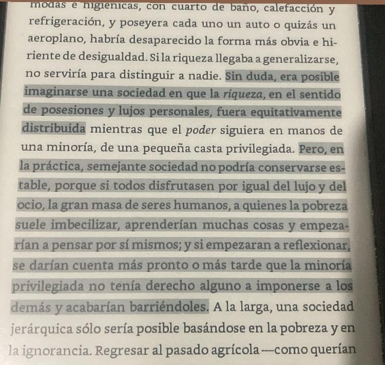
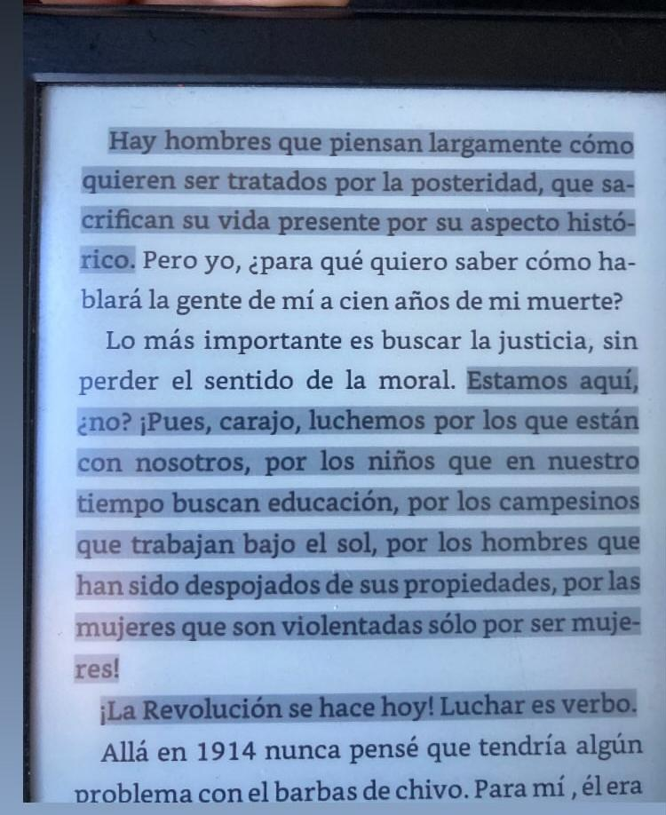
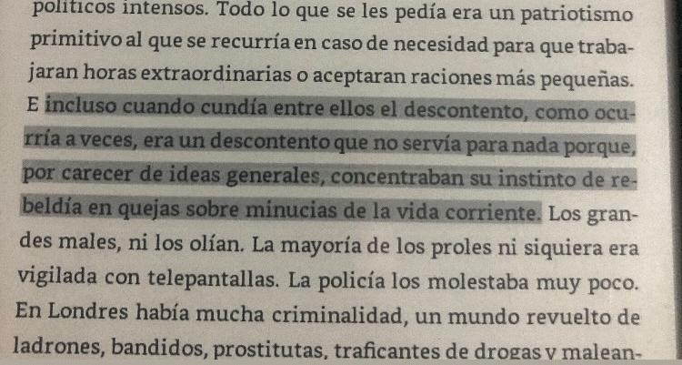

en este apartado, aprovecho para citas interesantes de libros que he ido leyendo, faltará recopilar todas las que tengo citadas en el kindle pero no les tomé foto

Eat te rich 1984,George Orwell


Solo el pueblo organizado salvará al pueblo 1984,George OrwellAsí nomás quedóExclamó el principe Platón, el Banquete